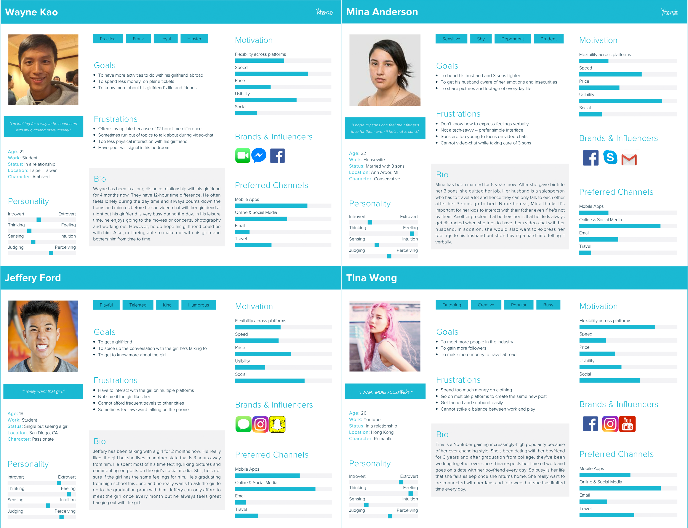
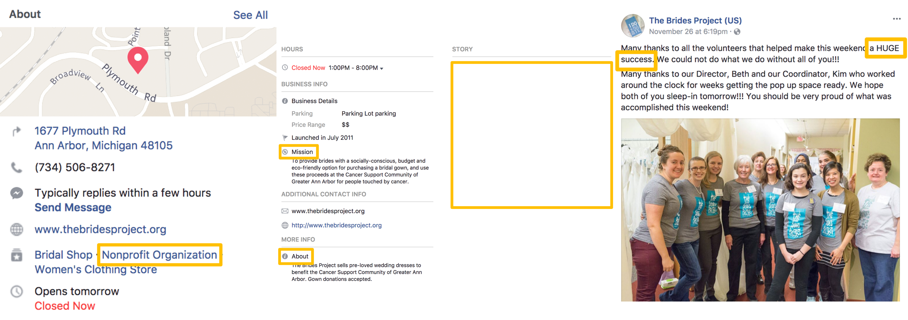
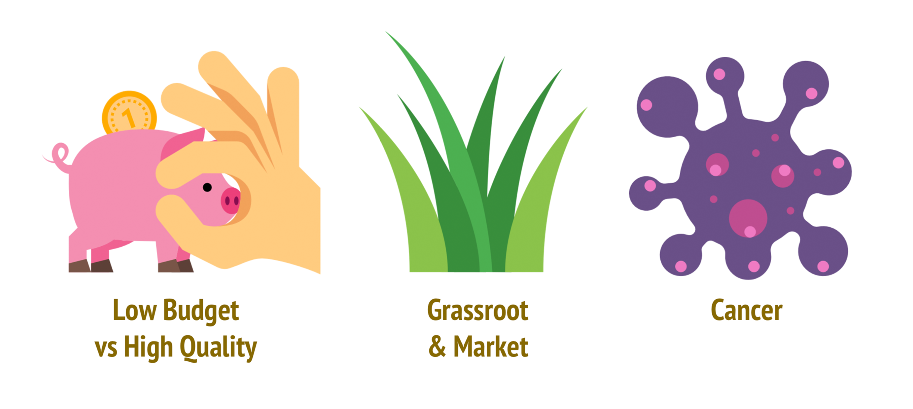
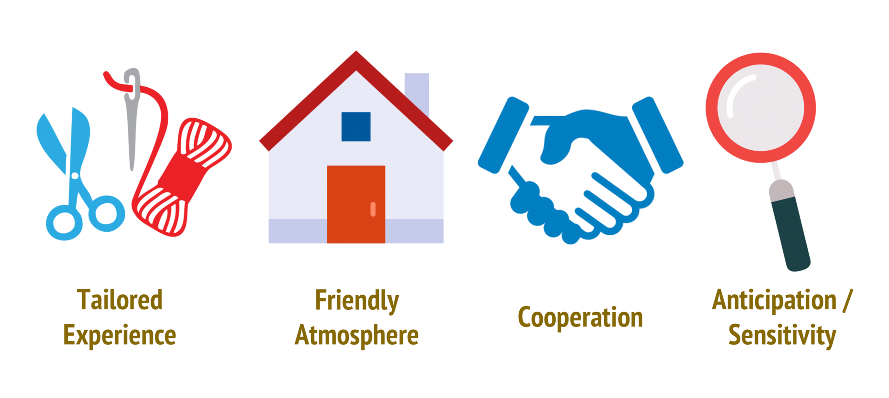
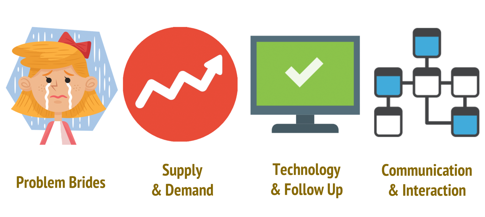
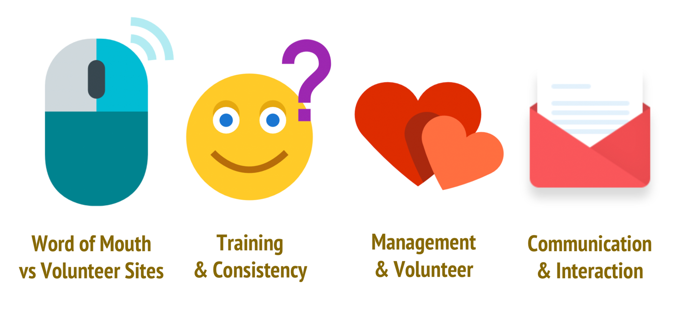
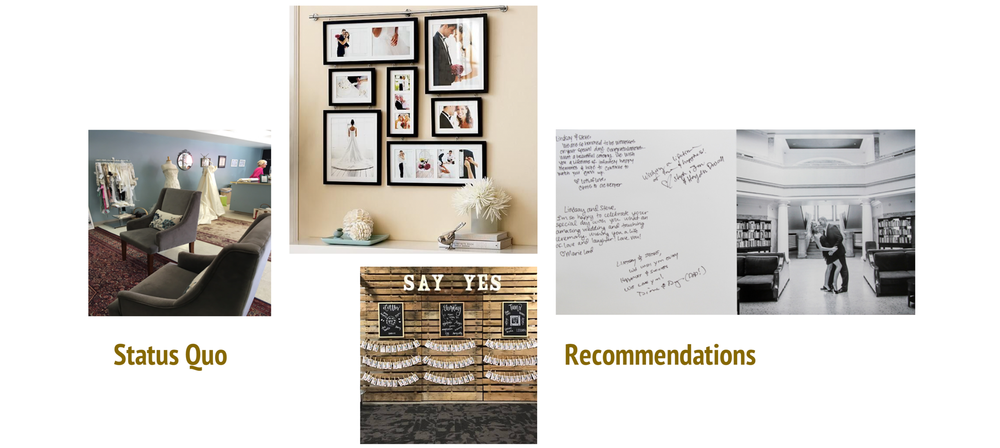

Portfolio
When the mind goes wild.

The Brides Project
UX Research / Service Design
AthleteJuvo
Interaction Design / UX Research

VS X City Image
Visual Identity Design

Steps along the Way
Life Outside Classrooms
We can always do something more to make a difference and be the change we want to be.
I cherish the mix of voices I can hear because that's what makes us unique as an idividual.
I won't give up. I won't give in 'til I reach the end. Then, I'll start again.
UX Research / Service Design
Interaction Design / UX Research
Visual Identity Design
Life Outside Classrooms
● Organized the first cross-college prom for 300+ freshmen from 6 departments
● Convinced 3 corporations into sponsor Econ Night, saving USD 1000+, historically high on the department
● Boosted Facebook post likes by 1000+ within 2 weeks for student event sponsors
● Doubled student interaction during class discussion
● Conducted a camp with 20+ students for 15+ elementary school students from vulnerable families
● Increased the attendance rate of partner seminars & technical workshops by 50% within 6 months
● Directed a film for Microsoft Internship Facebook page, gaining 6000+ views within 3 days
● Handled 30+ seminars/workshops registration and materials for 1000+ technical and sales partners
● Help with in-class behavioral experiments
● Grade assignments on Choice Architecture, advanced course of Game Theory at the School of Information

amystlin@umich.edu
My name is Shih-Ting but I go by Amy. I'm a rational interaction designer with a diversified background, including economics, Chinese-English translation and interpreation, in addition to design. I enjoy seeing the world from various points
of view and incorperate them into my design.
Currently, I'm a Master's Student at the University of Michigan, focusing on HCI and looking for summer internship. Feel free to check out my
resume or shoot me an
email if you're interested in being impressed. I'm always happy to chat!
Fields I specialize in:
Interaction Design / Incentive Design / Visual Design / Prototyping / Contextual Inquiry / Content Strategies / Marketing (B2B) / Localization / Interpretation (Consecutive & Simultaneous)
Things I'd love to do:
Brainstorming / Public Speaking / Sketching / Dancing
Constantly learning:
Programming (Python/Java/HTML/CSS) / Experimental & Behavioral Economics / UX Design & Research / Cooking great food
Are you in an LDR? Feel your partner even when you’re apart!
Couples in LDR are no different from normal couples – we also crave for a sense of intimacy,
which often times comes from the sense of touch.

FDC for LDR Couples is a 12-week individual project that I worked on because of the difficulties I faced when I first started a long-distance relationship (LDR) when I moved to the United States to pursue a Master’s degree. The main direction of the problem is predetermined by myself through personal experience but I spent some time scoping my problem afterwards.
My role in this project was basically everything, from user researcher, to project manager, and to interaction designer. I went through the whole design process on my own with thesis and methodology instructions from Professor Tonya McCarley.
As people are growing up, we might be faced with the dilemma between pursuing a career/degree and maintaining a romantic relationship with our special someone. To strike a balance between the two, more and more people start a long-distance relationship (LDR). The up side of it is that we have more time and personal space to enjoy our lives and spend time with friends and family while the down side is that we have to endure the days of loneliness, not being able to hug each other or just to hold hands on a bad day. As technology advances, we can now text or video-chat with our partner to share every little thing that happen around us at approximately the same time. Still, the means of interaction might be limited to words and stickers. Physical interactions and hence the playfulness might be sacrificed.
Face Dance Challenge (FDC) is originally a mobile-based application/game that allows users to score by changing their facial expression according to the emojis that show up on screen. However, in this version of FDC, it isn’t a mobile application itself. Instead, it’s designed to be an extension in the Facebook Messenger, aiming to spice up interaction between couples in LDRs. The design of FDC is based on the video-chat and gaming feature that Messenger already supports. However, it also allows physical interaction and the sense of touch to be transmitted via the vibration or haptic feedback of iPhones. Namely, FDC is a game that features a combination of image, sound and physical interaction. This combination makes up for the problem that couples in LDRs create less shared memories due to geographic barriers. By playing games while video chatting, couples can see each other’s facial expression and listen to their screams and laughter as if they were on each other’s sides.
At the problem exploration stage, I went through several boards of a popular BBS forum in Taiwan, called PTT, which has conserved online discussion data for more than 20 years. The boards I referred to includes Boy-Girl, Sex and Long-Distant. I read through all the discussions that contains key words like long distance relationship and problems to identify the problems as if I were conducting a user research. Eventually, I found that not only sentimental communication but also physical interactions play a significant role in relationships.

Competitive Analysis
Before I jump into the solution, I also did a competitive analysis on the current technological solutions available on the market. What surprised me was that despite the large number of LDR couples, all the software solutions I found on the market target couples who can meet relatively frequently. Hence, the features of these solutions are based on storing created memories. Sadly, for LDR couples, if they cannot meet their partners in person, memories can be hard to create. In that sense, these couples depend on contemplating on their good old days to maintain their attraction with their partners.
With these findings in mind, the final scope of my project was set – (1) spicing up the interactions between couples, physical interactions included and (2) create something that is shared between these partners.

Initial solution ideation consists mostly of extra-purchase-required solutions
After my project scope was defined, over the following design process, my solution focus has always been on the improvement of physical interaction between LDR couples. Interestingly, during brainstorming, almost all the ideas I came up with require the users to buy extra products or services such as gloves, meals or a sensor. Nonetheless, I have always kept the welfare of my target users in my mind and wanted to benefit as many couples in LDR as I do as possible, which is the reason why I choose Messenger as the foundation of my game.
Wayne, Mina and Jeffery are Pro-personas while Tina is an Anti-persona.
To further identify my target users, I built 4 personas, including 3 pro-persona and 1 anti-persona. All of these personas are based on the stories I read on the PTT forum, which are all true stories. To check the validity of my final solution, I went through story-mapping to model user activities and their current potential ways of interacting with their couples. Finally, I iterate three rounds of QOCs (Question, Options and Criteria) to explore the potential key features I want to include in my final design as well as how these features will be presented.
Low-fi prototype demonstration
With clearer picture of how my final design would be like, I started to work on my low-fi prototypes that models 10 tasks and 15 interactions I would like to test. The biggest design change occurred during my first user test on paper prototypes when my user told me that she had no idea that couples playing FDC are in charge of one side of the facial expression despite the instruction provided before the game starts. In my original design, the emoji would fly into the screen the horizontally and then vertically from the bottom side of the screen. Since my user was confused about how to react when she saw an emoji flying on the other side of the screen, I decided that emoji would always fly in the middle from the bottom, which sacrifice the level of difficulty but improves the interaction.
From the brainstorming to prototyping, I’m always thinking about my design. Whenever I have a new idea in my mind, I always talk to my boyfriend about it and discuss the pros and cons of it. Especially when I’m working on high-fi prototypes, I come up with new designs every day and usually spend more than a half of prototyping time to refine the design I made earlier. Generating new ideas every day was hard; however, as the reading suggested, I do have made a lot of breakthrough in terms of the visual representation as well as the interactions between screens and users. For instance, at first, the only way for my users to switch between screens was by tapping on the space on the screen but as I discovered more about InVision, I eventually set timer to switch between screens to make the motion of flying emoji much similar to how it would work in reality.

Incentive-increasing features

Major design change
My design philosophy has always been “People respond to incentives.” Aside from maintaining consistency across the whole project, I always think one step further as of how to make my design appealing and attractive in the long run. Thus, an explicit feature that has to do with incentive-creating is the mechanism that couples can unlock more interactions as they score more points. Additionally, I add another line of word hinting the users on how far they are from the new interaction. Other than that, I want to avoid LDR couples who play FDC to fight because of the game. Thus, the mechanism of the game itself awards good teamwork but if only one of the couple performs well, they can still gain points. Through this scoring mechanism, I would like to convey the message that though it’s perfect that we, as a couple, can work well together, if it turns out to be just the opposite, it’s still okay because one’s strength can help make up for the other’s weakness.
The societal impact I would like to make on couples in LDR is that there’s no need to be afraid of the distance between them and their special ones and it’s okay to run out of things to share during video-chat. LDR couples are no different from ordinary couples. Though reminiscing the good old days helps them go through the dark lonely nights, couples can still create new memories in spite of being physically apart.
Through my design, I want to inspire more potential or future design for LDR couples as during my competitive analysis, I found that there’s less existing digital solutions designed just for LDR couples.
The hardest part of going through the design process is not design itself. Instead, for me, it’s conquering the fear of falling behind. I’m really fortunate to have Tonya as my instructor to boost me up when I felt that I could not see my strength in the field of information with an economics background. However, as it turned out, my past-4-year training in economics does help me think more thoroughly and go one step forward to consider the long-run effect of my product.
In this 3-month group project, we, as a team of 4 student consultants, seek to figure out the optimal open hours for The Brides Project, a volunteer-based non-profit bridal shop, using contextual inquiry as well as user research methodology.


The Brides Project (TBP) is a non-profit bridal shop founded in September of 2011, run by volunteers and a small group of paid, part-time staff. TBP sells previously-worn and donated wedding dresses at discounted retail prices. All of these profits are then used to support local cancer education, counseling, and support programs at the Cancer Support Community (CSC) of Greater Ann Arbor.

For the past few years, The Brides Project has experienced surging customer demand. To fulfill customer demand, since November 2016, The Brides Project has extended open hours and started to accept walk-in customers while maintaining the by-appointment service. Recently, management has been concerned that the existing volunteer base may not be sufficient to support all the changes in open hours and service expansion. Management wants us to identify the optimal staffing model and open hours that will alleviate volunteer burn-out, maintain customer satisfaction, and ultimately drive sales growth of the store.
In order to determine the underlying causes of the problem addressed by The Brides Project, our team used various methods to gather detailed and comprehensive data. We relied heavily on contextual inquiry, a user-centered research method, and this methodology required us to conduct several semi-structured interviews with stakeholders of TBP.
We formally interviewed a total of 5 TBP stakeholders, all of whom were women: the director, the store manager, two volunteer bridal consultants, and one volunteer seamstress. We also conducted 2 informal interviews with volunteers in the bridal shop, and these lasted roughly 10 minutes. The interviews allowed us to gather insights from employees at all levels in the organization.
Another important aspect of our data-collection process was observations. While we were in the bridal shop for the interviews, we were constantly aware of the activity that was occurring around us. We also observed an entire shift of a volunteer in order to better understand the consultant process and the relationships between consultants and customers. During these observations, we also collected artifacts that are housed at the front desk or are given away as promotional materials.
The director also provided us with multiple spreadsheets, which included sales data, customer satisfaction surveys and results, and volunteer schedules.

Following each interview, we held interpretation sessions to discuss our findings and generate affinity wall notes. Each note contained one idea obtained from the interview, and overall, we generated about 300 notes.
We also conducted a content analysis of the TBP’s Facebook and Instagram accounts. We analyzed each post and the overall theme of their social media in order to determine what type of information TBP shares with consumers, how they communicate with their customers, and how they use the platforms to recruit and retain volunteers. Together, we discussed the effectiveness of their current approaches to social media.
Finding 1: It is TBP’s uniqueness of circumstance that allows them to stand out from other bridal shops
Finding 2: The quality relationships between management and volunteers, and between volunteers and brides drive high customer satisfaction
Finding 3: Some day to day operations are the main sources of frustration and need improvement
Finding 4: TBP emphasizes the recruitment, training, and retention of its volunteers
Volunteers play a fundamental role in TBP’s product and service deliveries, which enable TBP to operate at the low-cost model. Following the expansion of store open hours and service to walk-in customers, recruiting more volunteers and maintaining a stable volunteer base has become more critical to TBP’s long-term success.
To address the findings from the interviews and help TBP have sustainable growth, we therefore present four recommendations below:
Recommendation 1: Strengthen Social Media Presence
Purpose
Given people’s reliance on social media nowadays, TBP must brand themselves to showcase their business. This would attract both potential customers and volunteers. Moreover, TBP’s cause can be further highlighted on these platforms. Emphasizing its uniqueness as a non-profit organization that supports cancer will help it stand out from other bridal shops.
Status quo and area of improvement
Currently, TBP runs 2 social media pages: Facebook and Instagram. It uses Facebook to announce extra open hours, promote special sales events, and share volunteer stories and experiences. As for Instagram, TBP uses it as a platform to post photographs of brides who purchased their gowns from TBP and other miscellaneous content. However, TBP’s uniqueness as a cancer-support NPO is not emphasized well. In addition, no recruitment information can be found despite the increasing demand for volunteers. There does not appear to be a standard operational process or screening mechanism for its online social media strategies.
Actions/Next steps
Through the analysis of TBP’s social media platforms, it is clear that TBP has moderate understanding of these platforms and technology. However, the true problem lies in the content. Hence, Wonder Women would provide a Social Media workshop and detailed guidelines on how to manage social media pages. The following topics / advice will be covered:

With clear guidelines and examples provided, TBP can develop better understanding of content management strategies and the mechanism of how social media works.
Recommendation 2: Make Shop Feel More Homey
Purpose
The two-fold importance of making the shop more attractive and homey benefits not just customers, but volunteers as well.Given the limited budget of TBP and without the professional marketing tactics of other bridal shops, TBP relies on more grassroot methods of advertising their service.
Status quo and area of improvement
The shop, located on the ground floor of a small shopping area, is well-lit and decorated with several dressing rooms and sitting areas. Bridal gowns occupy the same floor and are not in holding areas. We noted that the front of the bridal shop could use a bit of work, as the entry is the first-point of contact and may serve to attract walk-in brides who do not fully understand TBP's mission. Currently, the front of the shop holds the TBP logo and a few framed photos along with a sign-in sheet and info placard.
Actions/Next Steps
Instead of replicating a bridal shop feel, TBP could showcase their commitment to their brides who come to TBP for many different reasons.
These tactics to make the shop more "homey" would be an addition to the social media outreach that TBP undertakes and create an immediate wow-factor to the store.
Recommendation 3: Engage Volunteers with One Another
Purpose
Fostering relationships between volunteers is crucial to maintaining volunteer satisfaction because social integration is positively related to intent to stay. Social relationships are a key element of an organization’s culture. When volunteers create bonds with each other, they will keep volunteering because they do not want to break these bonds. Therefore, it is crucial that TBP does not isolate volunteers from one another and provide them the opportunities to engage with one another.
Status quo and area of improvement
Currently, there is very little engagement between volunteers outside of their shifts. During shifts, the volunteers each work with a specific bride, but they help each other when it is busy.Outside of the shop, the main form of communication between volunteers is via email. Usually these email interactions regard covering each other’s shifts.
Actions/Next Steps
[Daily Basis]
There are multiple options on how to engage the volunteers with one another on an ongoing basis:
[Annual and Biannual]
In addition to engaging volunteers on a day-to-day level, annual and semi-annual events should also be implemented to accomplish this goal.
An all-staff meeting is not recommended. Our team recognized that volunteers are busy and it can be somewhat difficult to schedule a time where the most possible people are available.
Recommendation 4: Recruitment Outreach
Purpose
The continuation and effectiveness of volunteer recruitment outreach are critical to TBP’s sustainable success in serving more brides, driving customer satisfaction, and providing more funding to support the cancer community. Also, the efforts spent on enhancing recruiting outreach can not only increase customer’s satisfaction, but also help prevent volunteers from burning out.
Status quo and area of improvement
Although TBP has gradually developed its reputation as a volunteer-based bridal salon in Ann Arbor, the effectiveness of volunteer outreach has room for improvement. Currently, volunteer recruiting is mainly through word-of-mouth. TBP also reaches potential candidates through its official website, the CSC, social media, and local Media, such as MLive.
We see a limited connection between TBP and the University of Michigan (UM) community and the greater Ann Arbor community. Not many people at UM are aware of this community engagement opportunity.

The volunteer sign-up form on TBP’s official website
We discovered that TBP provides a volunteer sign-up form on the official website. In the form, TBP recruits not only bridal consultants, but also other positions, such as outreach, social media, and events. However, people would not know about the various volunteer opportunities if they did not visit the official website and enter the page of volunteer sign-up form.
Actions/Next Steps
To apply the classic marketing funnel to the volunteer outreach communication strategies, we believe TBP should focus on driving the awareness and interest of potential volunteer candidates. First of all, it is essential to identify the target volunteer segments, understand their preferences and motivations well, and design target outreach programs accordingly. We identified two potential target segments for TBP:
Emily, UM student
Annie, Resident in Ann Arbor
Generate Volunteer-Centric Content on Social Media
We recommend that TBP include more information regarding current volunteers:
This is an example of an image, with a great volunteer portrait, that could be used to show professionalism of volunteers at TBP.
Enhance Community Involvement
While creating more volunteer-centric social media content, TBP can strengthen the connection with the University of Michigan community and the Greater Ann Arbor community:
We found TBP’s flyer at the shop at UM Football Game Beer Garden. The flyer itself emphasized gown donations but could have included the volunteer outreach information and the link to
the volunteer sign-up page at TBP official website.
Through contextual inquiry, we sought to address The Bride’s Projects desire to determine optimal open hours and staffing model. In addition to many findings, our team ultimately discovered that in order to determine optimal open hours, the organization must recruit more volunteers. TBP should strengthen its social media presence, make the shop feel more homey, engage volunteers with each other, and emphasize its volunteer recruitment outreach as a way to increase volunteer satisfaction and customer demand.
A limitation of this study was that our contact with customers was minimal. Part of determining optimal open hours would have required interviews with customers, as optimal open hours requires a balance of the needs of TBP and customers. Furthermore, the interviewees were picked by the director, so these volunteers may not be fully representative of volunteers’ opinions and experiences.
This is my first time to work on a truly multidisciplinary team, which is both cross-cultural and cross-profession. However, contrary to the barrier I expected, my team, Wonder Women, worked very well together, from the start to the end. One of the key element that leads to the success of work is that we trust and respect each members’ profession.
There are 4 members in our team – two are Library and Archive students who are native speakers in English while the other two non-native members focuses on HCI with knowledge and background in economics or business. We figure out problem as a team but work independently on what we’re proficient in before we meet to synthesize our output.
In addition, through the project with TBP, we really learn how to think critically and analyze problems rationally. Surprisingly, it turned out that the problem we found about TBP was not the original problem TBP asked us to solve since there was more data that they have to do to collect in order to figure out the solutions to their original problem. I’m very proud of my team for being able to think outside the box and identify the real problem and solutions that our client should look into.
"Engagement", CHI Student Design Competition 2018:
Gamification solution for student athlete rehabilitation exercises and social support.
Student-athletes usually experience psychological issues during their injured period, which play important roles in their rehabilitation. The three major challenges are loss of identity, isolation, and inability to understand and communicate their recovery progress between checkups. To assist the injured athletes, we propose AthleteJuvo, a collaborative gaming solution incorporating routine rehabilitation exercises, team competition, and social supports. Specifically, AthleteJuvo utilizes the competitive nature of athletes to gamify the rehabilitation process. Athletes rebuild their identity by forming a team with other injured athletes to compete with their rival schools. AthleteJuvo also helps injured athletes meet nearby injured athletes and connect back with their non-injured team members by sending challenges. To aid in recovery, AthleteJuvo uses wearable sensing fabric which collect and report movement data to the athlete’s therapist.
For student athletes, getting injured is not only about physical influence. While scholars pointed out that the stressors a student-athlete experiences usually stem from performance; injury, which influences their performance directly, becomes one of the major concerns for student athletes.
Injuries influence athletes not only psychologically but also socially. Since most of an athlete’s daily schedule is team-centered, once they get injured, they miss the social interactions they would have had otherwise. Without their regular training and practice, athletes also miss the element of competition in their lives. According to the Mind, Body, and Sport handbook, only 63% of the student-athletes indicated a willingness to ask for help if they have any mental health concerns.
Therefore, our goal is to help injured athletes overcome the psychological issues and strengthen the social support and information they need during their rehabilitation. The key problems we aim to solve are: (1) the isolation and the feeling of uselessness during the injured period; (2) the inconvenient methods of getting advice from athletes with similar experience; (3) the lack of support and interaction from their team members; (4) demotivation by the inability to know their rehabilitation progress.
To understand the problems injured athletes encountered in a broader sense, we conducted an online survey where the access was limited to injured athletes only. To get an in-depth understanding of the rehabilitation experience of injured athletes, we held eight semi-structured interviews in this initial stage, including two expert interviews and six user interviews.
Phase One: Survey
An online questionnarie was distributed to sport-related clubs and associations through email lists at the University of Michigan. A total of 87 athletes with injury experience completed the online survey during a 9-day period, yielding a response rate of 47.2%. The average length of participation in sports is 12.23 years. There were 96.5% of the respondents who replied that the injury affected their psychological well-being as well. Moreover, 92% of them reported suffering from depression and isolation during their rehabilitation.
Phase Two: Expert Interview

We also interviewed one physical therapist at the University of Michigan, and one mental coach from the Facebook group, “The Injured Athletes Club”, which is aimed at providing consultation and support for the injured athletes. The physical therapist emphasized that injured athletes usually suffer from serious anxiety and depression. The mental coach also stressed that most injured student athletes find it difficult to let people understand their situation.

Phase Three: Injured Athletes Interview
In addition, we interviewed six volunteer athletes who were in the rehabilitation process or recently recovered from their injuries. All interviewees reported that during their injured period, they felt extremely useless, isolated, and experienced a loss of identity. One interviewee even thought about committing suicide during the rehabilitation period. Owing to the fact that an athlete’s daily schedule is usually team-centered and their social networks usually bond with the team, being injured means that the time spent with their team members decreases. With further investigation, we found that the feeling of being isolated stems from the inability to participate in team activities during the rehabilitation. The feeling of loss of identity derives from lacking the opportunities to work with their team members and compete against other teams.
Besides psychological well-being issues, they all tried to seek help from people who may have similar experiences, and to meet other injured athletes either online or offline to exchange information or get emotional support. When being asking about the inconvenience during rehabilitation, they mentioned keeping track of their rehabilitation progress was difficult, since most of the time physical therapists only provide paper-based tracking sheets, and it is difficult to stay motivated if they cannot see the recovery progress they have made.
The results from the survey, expert interview and injured athletes interview shed light on our design directions. We concluded that the core problems injured athletes encounter could be separated into two dimensions. The first is the psychological dimension: being excluded from the team-centered activities causes isolation and feelings of uselessness, due to the inability to contribute to team activities. The second dimension has to do with physical recovery. The rehabilitation progress would affect both their physical rehabilitation performance and their mental health, therefore it is crucial for them to be aware of their performance during the rehabilitation.
Based on the issues we aim to tackle with, we built personas to help us narrow the design scope. Our target users have the following qualities:
The following are the summarized personas:
Tammy is a junior, and the captain of the varsity rugby team at the University of Michigan. During one of the pre-season practices, she got a partial ACL (anterior cruciate ligament) and sprained LCL (lateral collateral ligament) tear. She hopes to recover as soon as possible so she attempts to connect with other athletes to get useful recovery tips.
Jason is a senior on the varsity rowing team at the University of Michigan. He got into a serious car accident a few months ago. His rehabilitation has been lengthy, tedious, and strenuous. During his months of recovery, he has not been able to participate in any game or practice with his teammates, which makes him very depressed and isolated. Due to the length of his rehabilitation, he also struggles to feel his progress. The exercises just seem to be repetitive and dull, and he gradually loses his motivation to perform the rehabilitation sessions.
In order to encourage and motivate athletes to complete their rehabilitation exercises, we decided to adopt available technologies to record and visualize their recovery progress. Our original technology solutions include smart bands, Kinect, smart headbands, and wearable sensing fabric. However, after interviewing some target users, we realized that although all of the proposals above could work in terms of recording body movement data, none of them could be carried around easily or attached on different injured body parts except for the wearable sensing fabric. Therefore, we decided to incorporate wearable sensing fabric as our movement recording solution.
The technology of sensing fabrics has been widely discussed in chemical engineering and information technology fields due to their versatility. It has been implemented in cardiovascular disease sensors, electrocardiogram (ECG) and electromyogram (EMG) sensors, and even respiration or temperature sensors. Wearable sensing fabric is suitable for injured athletes for its high flexibility which allows it to attach on any injured parts and accurately measure strain, rotation, and flexion movements commonly found in rehabilitation exercises.

From the initial user research, personas, and technology analysis, we concluded our key design directions. First, we need to bond injured athletes with their non-injured teammates more closely, and make both parties participate in the same activities to provide injured athletes a sense of contribution and competition as a team. Second, we need to use wearable sensing fabric as a means of recording athletes’ rehabilitation progress. Third, the solution has to be able to connect injured athletes together while providing ways for them to find companionship and fun.
We designed AthleteJuvo with the goals of helping injured athletes rebuild the feeling of teamwork and competition, and connect with other athletes with similar experience. AthleteJuvo is a mobile application that utilizes smart fabric technology to gamify, visualize, and socialize the rehabilitation process for injured athletes.
Key Features

In the initial user interviews, athletes reported that one of the stress points they suffered during the injury period was the unawareness of their rehabilitation progress. Therefore, creating visualized data and keeping them informed is a crucial part of the rehabilitation process. Our team decided to utilize wearable sensing fabric to detect and record rehabilitation data. The rehabilitation tasks are assigned by their physical therapists, and the sensing fabric patch detects the amount the fabric has stretched. Once the fabric is worn over moving joints or injured muscles, the repetitions can be easily counted to allow the user to keep track of their progress.
Without their regular training and practice, they miss the element of competition in their lives. In order to rebuild the feelings of teamwork and competition, and to encourage athletes to conduct their rehabilitation sessions thoroughly, we utilize their zeal for competing by pairing those from the same school and pitting their rehabilitation progress against a rival school. The rival schools are selected on the basis of how well their injured athletes are recovering.
Besides competition, AthleteJuvo engages and bonds athletes together. Injured athletes will get extra points by sending challenges to non-injured team members. While rehabilitation exercises are usually repetitive tasks, athletes often reported them to be strenuous in the earlier phases or boring in the later phases of their recovery. Therefore, AthleteJuvo encourages nearby athletes to meet and finish their rehabilitation sessions together. Once another injured athlete is detected being in the same area, AthleteJuvo notifies and asks the user if s/he wants to do the rehabilitation exercises with the approaching user.
From the interview data, we also affirmed that athletes get frustrated easily if they cannot see the progress of their performance during rehabilitation. AthleteJuvo visualizes their progress on a daily basis to motivate them.
We went through two iterations to test our design solutions. First we created sketches and generated a low-fidelity prototype. We then invited five participants to test the low-fidelity prototype. The participants were asked to perform the following tasks, with our team members using a Wizard of Oz technique:
Low-Fidelity Prototype

Based on the feedback, we decided to add a calendar and more statistics visualization to show the progress, and add a feature that allows athletes to taunt rival teams and cheer for those in the same school. When other injured athletes are nearby, the application shows the sports they play.
High-Fidelity Prototype
After refining our interface, we then invited five more participants to test the ideas. The main feedback includes:
The users’ feedback confirmed that it would be better to have a clear guide or tutorials for the features and scoring system. Our users were fond of the idea of making the rehabilitation competitive. One of the participants commented: “I think it (AthleteJuvo) is cool because a lot of athletes struggle emotionally. When you get injuries, you are out of sport, and sport is your identity. So I think it is gaining it back and making it competitive through rehab, I like this a lot.”
AthleteJuvo is a gaming solution aimed at helping injured athletes get support from people with similar cases, solving the sense of estrangement from the team, and encouraging and motivating injured athletes to do their rehabilitation exercises regularly while providing them a sense of participating in team sports again. Our evaluation demonstrated that athletes considered the ideas and features to be very practical and fun. We also identified usability problems which we were able to address to improve our design. We believe, through AthleteJuvo, athletes could be better understood and be engaged in both the injured athlete community and non-injured athlete community.
Combine the features of 5 different cites from 5 different continents with a brand.

I was in charge of the city Majuro, Republic of Marshall Islands. The dominant color is tiffany green while the recessive colors are navy, white and green.

A triangle bralette without thick padding is the best choice for a vaction to a tropical island. Strappy and adjustable back along with sporty elastic band adds enough support to the boobs. With the cute pandunus pattern on it, the bralette can be worn as a single item and is easy to go with any plain shirt.

Five different cities are located in different parts of the PCCS color system. Since the city image of Majuro is relaxing, marine and tropical, it belongs to the bright tone grouping.

Colors used are dotted on the world map.

↑ Top(Edited/Original): The pandunus pattern is used since it's one of the most common plants on the Marshall islands, which adds a tropical feeling to the bralette.
 ↑ Bottom(Edited/Original)
↑ Bottom(Edited/Original)
Microsoft Internship Sharing.

Click into watch the video on Youtube. I was chosen as three of the representatives to share what I had learned during my one-year internship at Microsoft with MBA Students of University of Pittsburgh.

Hereis the Chinese version of the internship sharing video, filmed during the information session of 2016 Microsoft Intern Recruitment at National Taiwan University. More stories are shared in this video. Enjoy :)
Award-winning collage & poetry.

Inspiration: The designated theme was, "Living arts in our lives." I chose the action of frying an egg for a loved one in the morning and describe the actions as a plot in kongfu movies.
Collage made with Photoshop.
Check out my life in ballroom dance club.

Ballroom Dance Club of National Taiwan University (NTUBDC) competed in the College Cup and won 2nd place out of 20+ colleges around Taiwan. I also won the 6th place in chacha and jive.

I was the Multimedia Officer of NTUBDC from 2015/7~2016/6.
Feel free to follow us on our Facebook Page.
Singing, dancing, acting, cheerleading and more!

2016: Worth it
2015: Lo So Che Finira/ September/ Pop Dance Musical
2014: Cheerleading
New-comer in marketing.

11 days countdown: Encourage people to come to Econ Week and buy lunch and snacks. This way, their abdomens can be large enough to get in touch / kiss the other.

6 days countdown: Whose stomach is rumbling? The 2 girls hears the boys' stomach rumbling. The number 6 looks like an ear.

5 days countdown: Spicy hot girls with spicy hot burrito.

1 day countdown: Unveil the cover girls who only shows their back and abdomen on the banner and the logo respectively.
Facebook Page